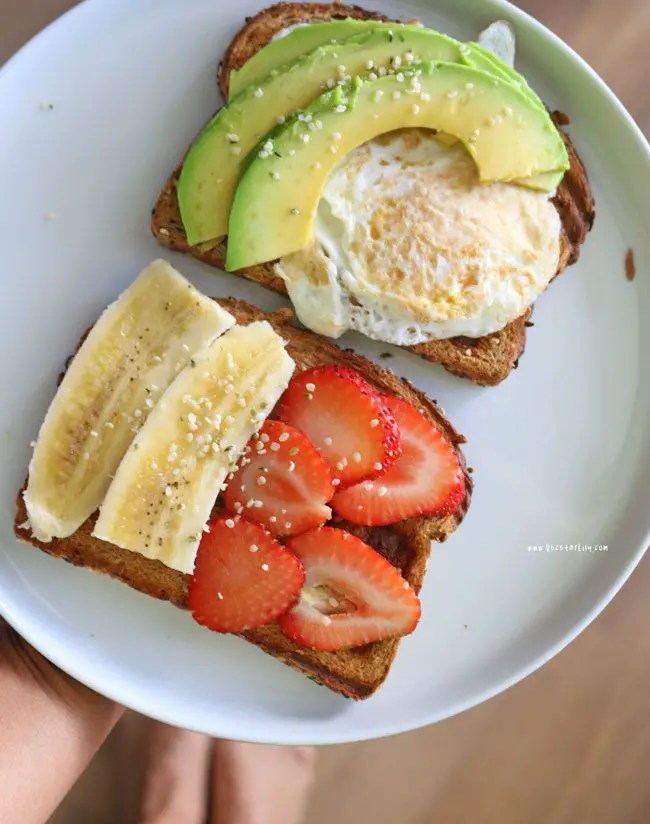
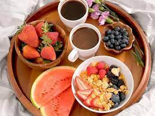
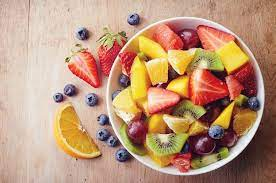

Total: $0
Desayunos
| Imagen | Descripcion | Precio |  |
La historia de los pancakes se remonta a la época medieval, cuando se preparaba una mezcla de harina, huevo y leche para hacer un tipo de pan plano. Con el tiempo, esta receta evolucionó para incluir levadura en polvo y se convirtió en lo se conoce actualmente como hotcake. |
$180.00 |
|---|---|---|
 |
Este desayuno contiene proteínas de muy buena calidad y de alto valor biológico. También incluye vitaminas de los grupos A y B. Por último, contiene minerales entre los que destaca el hierro, cuyo origen animal permite una fácil absorción. |
$60.00 |
|  | El pan integral de frutas y frutos secos es una deliciosa opción para los amantes del pan casero. Tiene un sabor, textura y aroma bárbaros, y lo mejor de todo es que es nutritivo y energético. |
$50.00 |
|  | La unión de cereales y frutos secos puede ser espectacular tanto a nivel culinario como nutritivo. Así, pasas de uvas, avellanas, almendras, nueces, castañas y prácticamente cualquier fruto seco integrado en el pan aporta sabor y valor nutricional. |
$70.00 |
 |
El desayuno de pan con huevo y tocino es un clásico que combina sabores reconfortantes y texturas irresistibles |
$140.00 |
|  | Este desayuno es una opción saludable y deliciosa para comenzar el día con energía. Combina la frescura de las frutas con la cremosidad del yogur natural |
$100.00 |